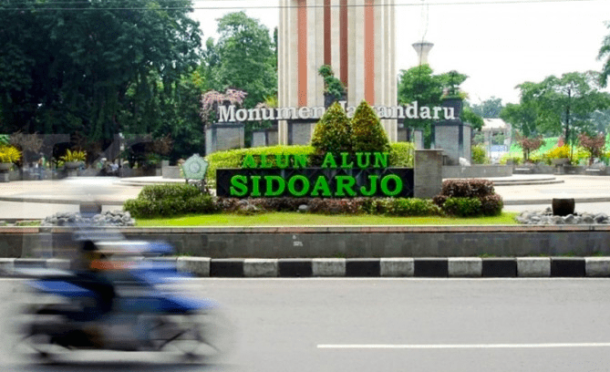

Wisata Alun-Alun Sidoarjo
Alun-Alun Sidoarjo adalah salah satu ikon kota yang menjadi pusat aktivitas warga lokal dan wisatawan...
Lokasi

Alun-Alun Sidoarjo adalah salah satu ikon kota yang menjadi pusat aktivitas warga lokal dan wisatawan...

Nama "Jayandaru" berasal dari bahasa Jawa yang berarti "kemenangan yang baru." Makna ini melambangkan semangat masyarakat Sidoarjo...

Apapun penyebabnya, semburan lumpur panas ini telah mengalir selama bertahun-tahun...